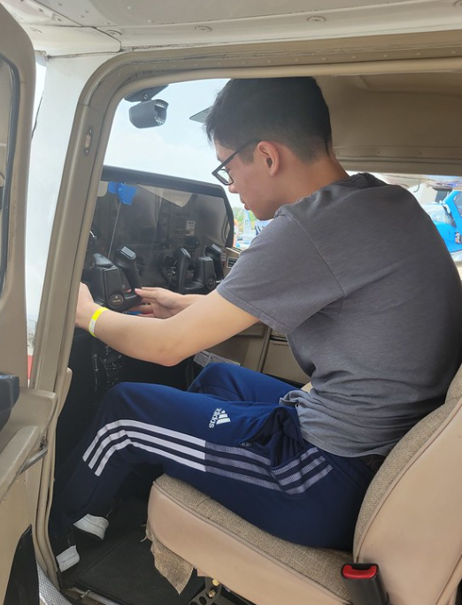

Takeoff & Ending
After exploring all the helicopters and Cessna aircraft, I eventually wandered over to the C-130 cargo plane from the U.S. military. This massive beast of an aircraft had its main hatch wide open, and inside was a cavernous space filled with people walking around, checking out every inch of it. For me, stepping into it was an unforgettable moment. We’ve all seen movies where soldiers load into these giant cargo planes before some intense action scene, or we see them in documentaries or news footage—but actually standing inside one in real life? That hit is different. For something that looks enormous from the outside, it’s surprising how cramped it can feel once you’re actually in there. The scale of the place, the machinery, the smell of jet fuel lingering in the air, it all felt surreal. After all of that, I grabbed a hotdog and a drink from a stand just outside the aircraft, which honestly hit the spot after hours of wandering around. Eventually, the entire event started to wind down, and the crews were getting ready to head home. But they didn’t leave quietly—they went out in style. One by one, the helicopters lifted off or taxied out, and for me, that was one of the coolest parts of the whole day. You know in movies when the wind from the rotors knocks everything over and sends dust flying everywhere? Yeah… that’s not fake. It is insanely powerful. I got a face full of dust and my ears died as well. After the Cessnas taxied off the grass runway, we waited for the C-130 to head out too, but it was taking forever. It was summer, we were tired, and eventually we decided to call it a day. I kind of wish we had stayed longer, but hey—that’s what YouTube videos are for. All in all, I had an incredible time, one of the coolest days of my life, and it’s something I know I’ll never forget.
External Links
Internal Links
Navigate through your site easily: Back to Home | Go to Page 2 | Go to Page 3
